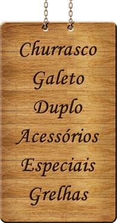
Barra de fundo churrasqueira
Ref. 325
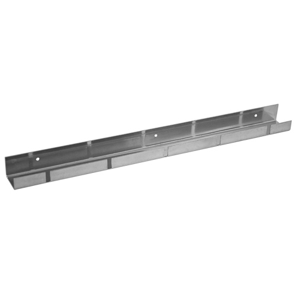
30cm - 50cm - 100cm
Apoiar a ponta do espeto no fundo da churrasqueira evitando que a mesma fique suja
Barra apoio espetos redonda
Ref. 328
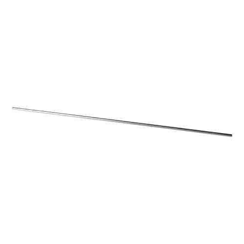
60cm - 80cm - 100cm - 120cm
Sustentar o espeto horizontalmente na parte frontal da churrasqueira
Barra apoio espetos c/ encaixe
Ref. 329
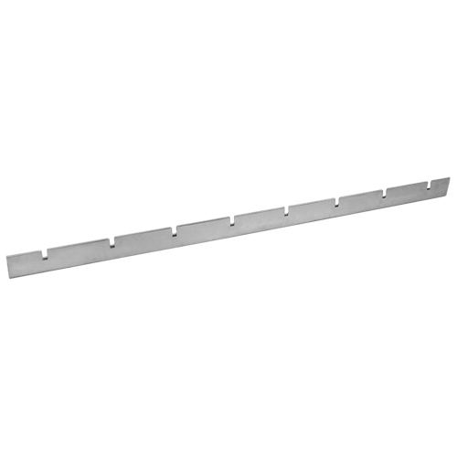
60cm - 80cm - 100cm
Sustentar o espeto na vertical ou na horizontal na parte frontal da churrasqueira
Suporte Lateral L - 5 posicoes
Ref. 321
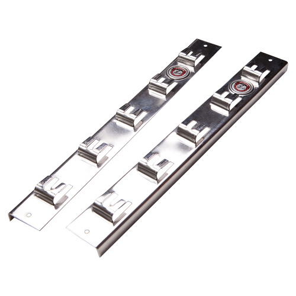
40cm - 50cm
Sustentar o espeto na vertical ou na horizontal na parte frontal da churrasqueira
Suporte Lateral U - 5 posicoes
Ref. 322
40cm - 50cm
Sustentar o espeto na vertical ou na horizontal na parte frontal da churrasqueira
Suporte Lateral 1 posicao(4 unid) - Ref. 323
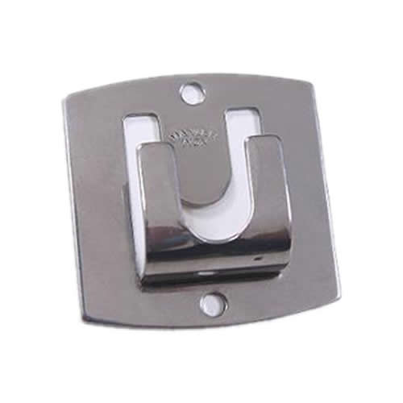
único
Sustentar o espeto na vertical ou na horizontal na parte frontal da churrasqueira
Batedor de sal para churrasco
Ref. 341
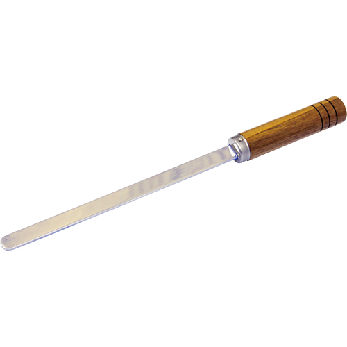
30 cm
Retirar o exesso de sal da carne após o assada
Pá para brasa churrasqueira
Ref. 344
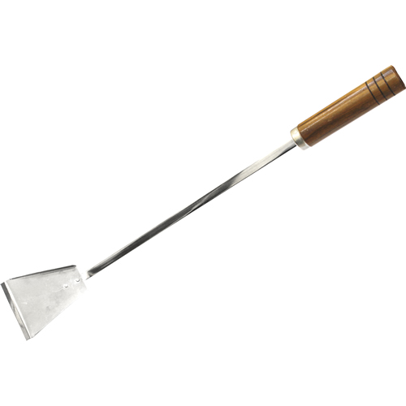
único
Recolher as cinzas ou qualquer dejeto de dentro da churrasqueira
Puxador de brasa churrasqueira
Ref. 345
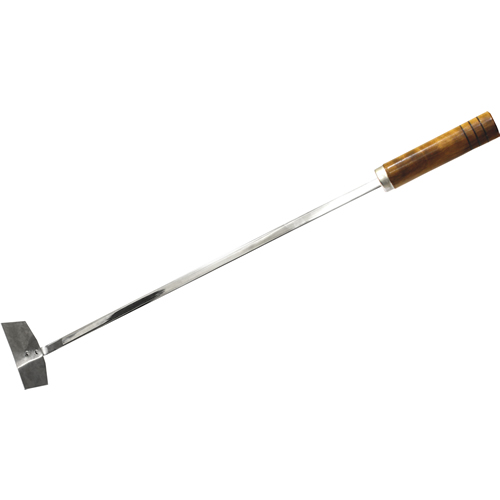
único
Distribuir ou atiçar o carvão em brasa dentro da churrasqueira
Faca inox avulsa
Ref. 385
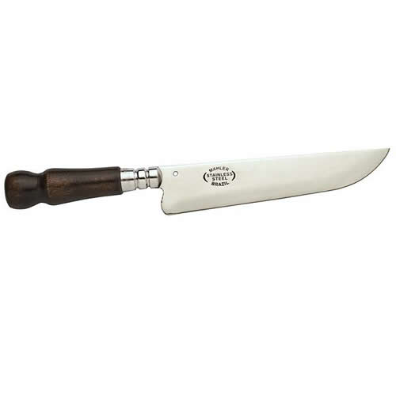
6'' - 8''
Ideal para corte de todos os tipos de carnes
Faca inox c/ chaira e bainha
Ref. 386
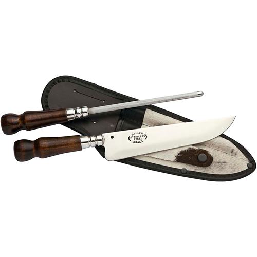
6'' - 8''
Ideal para corte de todos os tipos de carnes


{kind=link}
{kind=link}
{kind=link}
{kind=link}
{kind=link}
{kind=link}
{kind=link}
{kind=link}
{kind=link}
{kind=link}
{kind=link}